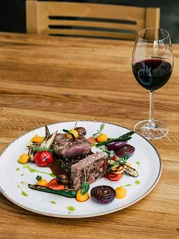
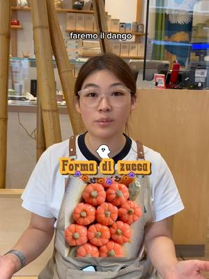
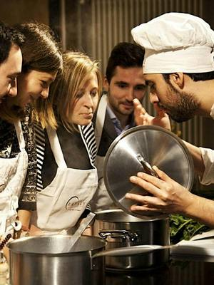

Corsi di cucina e cooking class a Torino e dintorni
Cooking class, corsi di pasta fresca, pane, pasticceria e cucine dal mondo a Torino, Cuneo e dintorni.
Cerca tutti i workshop98 attività in arrivo · aggiornato il 21 ottobre 2026
 gio22ottCucinaCake & Chill: dipingi la tua tortagiovedì 22 ottobreCentro (TO)con Limaco’s Lab
gio22ottCucinaCake & Chill: dipingi la tua tortagiovedì 22 ottobreCentro (TO)con Limaco’s Lab
gio22ottCucinaCucine dal mondo: menu francesegiovedì 22 ottobre, 16:30–19:30Lingotto (TO) · 80 € · esauritocon Eataly Torino Lingotto
gio22ottCucinaLaboratorio di Halloween: dolci giapponesigiovedì 22 ottobre, 19:30Centro (TO)con Kintsugi con Tabete Market
ven23ottCucinaMenu afrodisiaco: cucina di coppiavenerdì 23 ottobre, 16:30–19:30Lingotto (TO) · 160 € · esauritocon Eataly Torino Lingotto con Slow Food- sab24ottCucinaKombucha Workshop: tè fermentatosabato 24 ottobre, 11:00Vanchiglietta (TO) · 24 €con Gizzy per Bocciofila Vanchiglietta
 sab24ottCucinaPane con pasta madre: corso praticosabato 24 ottobre, 14:30–18:30San Donato (TO) · 50 €con Panacea Social Farm
sab24ottCucinaPane con pasta madre: corso praticosabato 24 ottobre, 14:30–18:30San Donato (TO) · 50 €con Panacea Social Farm- dom25ottCucinaLezione di pasticceria: le basi veganedomenica 25 ottobre, 14:30–17:30Lingotto (TO) · 80 €con Eataly Torino Lingotto
- dom25ottCucinaKombucha Workshop: tè fermentatodomenica 25 ottobre, 16:00Pozzo Strada (TO) · 24 €con Gizzy per Wine Nest
- dom25ottCucinaRicette in viaggio: ingredienti e culturedomenica 25 ottobre, 16:30Aurora (TO)con Italian Climate Network per Jigeenyi
 lun26ottCucinaCooking class: primi piattilunedì 26 ottobre, 19:30–22:30Centro (TO) · 85 €con STUDIOFOOD33 con lo chef Patrik Lisa
lun26ottCucinaCooking class: primi piattilunedì 26 ottobre, 19:30–22:30Centro (TO) · 85 €con STUDIOFOOD33 con lo chef Patrik Lisa mar27ottCucinaCake & Chill: dipingi la tua tortamartedì 27 ottobreCentro (TO)con Limaco’s Lab
mar27ottCucinaCake & Chill: dipingi la tua tortamartedì 27 ottobreCentro (TO)con Limaco’s Lab mar27ottCucinaCooking class: pasta fresca ripienamartedì 27 ottobre, 19:30Centro (TO)con STUDIOFOOD33 con lo chef Stefano Buse
mar27ottCucinaCooking class: pasta fresca ripienamartedì 27 ottobre, 19:30Centro (TO)con STUDIOFOOD33 con lo chef Stefano Buse mer28ottCucinaCucina giapponese vegana: tradizione vegmercoledì 28 ottobre, 17:30–20:30Lingotto (TO) · 80 € · esauritocon Eataly Torino Lingotto
mer28ottCucinaCucina giapponese vegana: tradizione vegmercoledì 28 ottobre, 17:30–20:30Lingotto (TO) · 80 € · esauritocon Eataly Torino Lingotto gio29ottCucinaLa cucina del bosco: sapori d’autunnogiovedì 29 ottobre, 17:30–20:30Lingotto (TO) · 75 €con Eataly Torino Lingotto con Slow Food
gio29ottCucinaLa cucina del bosco: sapori d’autunnogiovedì 29 ottobre, 17:30–20:30Lingotto (TO) · 75 €con Eataly Torino Lingotto con Slow Food sab31ottCucinaSpooky Cupcakes: decorazione di Halloweensabato 31 ottobre, 15:30–18:00Centro (TO) · 50 €con Aperi Pods
sab31ottCucinaSpooky Cupcakes: decorazione di Halloweensabato 31 ottobre, 15:30–18:00Centro (TO) · 50 €con Aperi Pods dom1novCucinaCucina marocchina: la bastilladomenica 1 novembre, 16:00–19:00Aurora (TO)con Najah Hattani per Jigeenyi
dom1novCucinaCucina marocchina: la bastilladomenica 1 novembre, 16:00–19:00Aurora (TO)con Najah Hattani per Jigeenyi lun2novCucinaWorkshop di ramen: ramen vegetalelunedì 2 novembre, 17:30–19:30Lingotto (TO) · 65 € · esauritocon Eataly Torino Lingotto
lun2novCucinaWorkshop di ramen: ramen vegetalelunedì 2 novembre, 17:30–19:30Lingotto (TO) · 65 € · esauritocon Eataly Torino Lingotto lun2novCucinaCooking class: sushi livello 2lunedì 2 novembre, 19:30–22:30Centro (TO) · 85 €con STUDIOFOOD33 con Tabete Market
lun2novCucinaCooking class: sushi livello 2lunedì 2 novembre, 19:30–22:30Centro (TO) · 85 €con STUDIOFOOD33 con Tabete Market mar3novCucinaLezione di pasticceria: pasticcini mignonmartedì 3 novembre, 17:30–20:30Lingotto (TO) · 90 €con Eataly Torino Lingotto
mar3novCucinaLezione di pasticceria: pasticcini mignonmartedì 3 novembre, 17:30–20:30Lingotto (TO) · 90 €con Eataly Torino Lingotto mar3novCucinaCooking class: filetto e tagliatamartedì 3 novembre, 19:30–22:30Centro (TO) · 75 €con STUDIOFOOD33 con lo chef Stefano Buse
mar3novCucinaCooking class: filetto e tagliatamartedì 3 novembre, 19:30–22:30Centro (TO) · 75 €con STUDIOFOOD33 con lo chef Stefano Buse mer4novCucinaChe cucina del cavolo: ricette con i cavolimercoledì 4 novembre, 17:30–20:30Lingotto (TO) · 70 €con Eataly Torino Lingotto
mer4novCucinaChe cucina del cavolo: ricette con i cavolimercoledì 4 novembre, 17:30–20:30Lingotto (TO) · 70 €con Eataly Torino Lingotto- mer4novCucinaCooking class: cucina del Sichuanmercoledì 4 novembre, 19:30–22:30Centro (TO) · 85 €con STUDIOFOOD33
 gio5novCucinaIl riso che non ti aspetti: ricette creativegiovedì 5 novembre, 17:30–20:30Lingotto (TO) · 75 €con Eataly Torino Lingotto con Slow Food
gio5novCucinaIl riso che non ti aspetti: ricette creativegiovedì 5 novembre, 17:30–20:30Lingotto (TO) · 75 €con Eataly Torino Lingotto con Slow Food gio5novCucinaCooking class: roast beef e tajaringiovedì 5 novembre, 19:30–22:30Centro (TO) · 75 €con STUDIOFOOD33 con lo chef Stefano Buse
gio5novCucinaCooking class: roast beef e tajaringiovedì 5 novembre, 19:30–22:30Centro (TO) · 75 €con STUDIOFOOD33 con lo chef Stefano Buse ven6novCucinaCooking class: street food vegetalevenerdì 6 novembre, 19:30–22:30Centro (TO) · 85 €con STUDIOFOOD33 con le chef di RosaRegina
ven6novCucinaCooking class: street food vegetalevenerdì 6 novembre, 19:30–22:30Centro (TO) · 85 €con STUDIOFOOD33 con le chef di RosaRegina sab7novCucinaL’arte della fonduta: formaggi filantisabato 7 novembre, 09:30–12:30Lingotto (TO) · 70 €con Eataly Torino Lingotto con Slow Food
sab7novCucinaL’arte della fonduta: formaggi filantisabato 7 novembre, 09:30–12:30Lingotto (TO) · 70 €con Eataly Torino Lingotto con Slow Food- sab7novPittura e scritturaElixirs: art journal e fire cidersabato 7 novembre, 10:00–12:30Aurora (TO) · 35 €con Kiva per Velvet Truffle Riot
 sab7novCucinaCooking class: tartufo biancosabato 7 novembre, 20:00–23:00Centro (TO) · 150 €con STUDIOFOOD33 con lo chef Stefano Buse
sab7novCucinaCooking class: tartufo biancosabato 7 novembre, 20:00–23:00Centro (TO) · 150 €con STUDIOFOOD33 con lo chef Stefano Buse dom8novCucinaBrunch delle feste: show cookingdomenica 8 novembre, 09:30–12:30Lingotto (TO) · 50 €con Eataly Torino Lingotto
dom8novCucinaBrunch delle feste: show cookingdomenica 8 novembre, 09:30–12:30Lingotto (TO) · 50 €con Eataly Torino Lingotto lun9novCucinaWorkshop di pizza: pizza e spritzlunedì 9 novembre, 18:00–19:30Lingotto (TO) · 50 € · esauritocon Eataly Torino Lingotto
lun9novCucinaWorkshop di pizza: pizza e spritzlunedì 9 novembre, 18:00–19:30Lingotto (TO) · 50 € · esauritocon Eataly Torino Lingotto mar10novCucinaLezione di pasticceria: salse e crememartedì 10 novembre, 17:30–20:30Lingotto (TO) · 80 €con Eataly Torino Lingotto
mar10novCucinaLezione di pasticceria: salse e crememartedì 10 novembre, 17:30–20:30Lingotto (TO) · 80 €con Eataly Torino Lingotto- mar10novCucinaOde al Piemonte: cucina piemontesemartedì 10 novembre, 19:30–22:30Centro (TO) · 75 €con STUDIOFOOD33
 ven13novCucinaMenu senza fornelli: speciale olio evovenerdì 13 novembre, 17:30–20:30Lingotto (TO) · 70 €con Eataly Torino Lingotto con Slow Food
ven13novCucinaMenu senza fornelli: speciale olio evovenerdì 13 novembre, 17:30–20:30Lingotto (TO) · 70 €con Eataly Torino Lingotto con Slow Food sab14novCucinaCake Painting: decora e dipingi una tortasabato 14 novembreCentro (TO) · 50 €con Aperi Pods
sab14novCucinaCake Painting: decora e dipingi una tortasabato 14 novembreCentro (TO) · 50 €con Aperi Pods lun16novCucinaMenu afrodisiaco: cucina di coppialunedì 16 novembre, 17:30–20:30Lingotto (TO) · 160 €con Eataly Torino Lingotto con Slow Food
lun16novCucinaMenu afrodisiaco: cucina di coppialunedì 16 novembre, 17:30–20:30Lingotto (TO) · 160 €con Eataly Torino Lingotto con Slow Food- lun16novCucinaCooking class: pizza e focaccia ligurelunedì 16 novembre, 19:30–22:30Centro (TO) · 85 €con STUDIOFOOD33
 mar17novCucinaLezione di pasticceria: mignon salatimartedì 17 novembre, 17:30–20:30Lingotto (TO) · 90 €con Eataly Torino Lingotto
mar17novCucinaLezione di pasticceria: mignon salatimartedì 17 novembre, 17:30–20:30Lingotto (TO) · 90 €con Eataly Torino Lingotto- mar17novCucinaCooking class: risotti gourmetmartedì 17 novembre, 19:30–22:30Centro (TO) · 75 €con STUDIOFOOD33
 mer18novCucinaCucina francese: una sera in brasseriemercoledì 18 novembre, 17:30–20:30Lingotto (TO) · 80 €con Eataly Torino Lingotto con lo chef Clovis Jourdain
mer18novCucinaCucina francese: una sera in brasseriemercoledì 18 novembre, 17:30–20:30Lingotto (TO) · 80 €con Eataly Torino Lingotto con lo chef Clovis Jourdain- mer18novCucinaCooking class: noodles giapponesimercoledì 18 novembre, 19:30–22:30Centro (TO) · 85 €con STUDIOFOOD33
 ven20novCucinaLezione di pasticceria: torte da credenzavenerdì 20 novembre, 17:30–20:30Lingotto (TO) · 70 €con Eataly Torino Lingotto
ven20novCucinaLezione di pasticceria: torte da credenzavenerdì 20 novembre, 17:30–20:30Lingotto (TO) · 70 €con Eataly Torino Lingotto sab21novCucinaCucine dal mondo: India gluten freesabato 21 novembre, 14:30–17:30Lingotto (TO) · 80 €con Eataly Torino Lingotto
sab21novCucinaCucine dal mondo: India gluten freesabato 21 novembre, 14:30–17:30Lingotto (TO) · 80 €con Eataly Torino Lingotto sab21novCucinaPane con pasta madre: corso praticosabato 21 novembre, 14:30–18:30San Donato (TO) · 50 €con Panacea Social Farm
sab21novCucinaPane con pasta madre: corso praticosabato 21 novembre, 14:30–18:30San Donato (TO) · 50 €con Panacea Social Farm dom22novCucinaAutunno fusion veg: cucina vegetaledomenica 22 novembre, 09:30–12:30Lingotto (TO) · 75 €con Eataly Torino Lingotto
dom22novCucinaAutunno fusion veg: cucina vegetaledomenica 22 novembre, 09:30–12:30Lingotto (TO) · 75 €con Eataly Torino Lingotto dom22novCucinaHappy vegan finger food: stuzzichini vegdomenica 22 novembre, 14:30–17:30Lingotto (TO) · 75 €con Eataly Torino Lingotto con Caterina Mosca
dom22novCucinaHappy vegan finger food: stuzzichini vegdomenica 22 novembre, 14:30–17:30Lingotto (TO) · 75 €con Eataly Torino Lingotto con Caterina Mosca lun23novCucinaWorkshop di pizza: pizza e gin toniclunedì 23 novembre, 18:00–19:30Lingotto (TO) · 50 € · esauritocon Eataly Torino Lingotto
lun23novCucinaWorkshop di pizza: pizza e gin toniclunedì 23 novembre, 18:00–19:30Lingotto (TO) · 50 € · esauritocon Eataly Torino Lingotto- lun23novCucinaCooking class: aperitivo messicanolunedì 23 novembre, 19:30–22:30Centro (TO) · 85 €con STUDIOFOOD33
 mar24novCucinaWorkshop di ramen: a tutto ramenmartedì 24 novembre, 17:30–19:30Lingotto (TO) · 65 € · esauritocon Eataly Torino Lingotto
mar24novCucinaWorkshop di ramen: a tutto ramenmartedì 24 novembre, 17:30–19:30Lingotto (TO) · 65 € · esauritocon Eataly Torino Lingotto gio26novCucinaCucina vegetale delle feste: menu veggiovedì 26 novembre, 17:30–20:30Lingotto (TO) · 75 €con Eataly Torino Lingotto con Slow Food
gio26novCucinaCucina vegetale delle feste: menu veggiovedì 26 novembre, 17:30–20:30Lingotto (TO) · 75 €con Eataly Torino Lingotto con Slow Food- gio26novCucinaCooking class: bento d’autunnogiovedì 26 novembre, 19:30–22:30Centro (TO) · 85 €con STUDIOFOOD33 con Tabete Market
 dom29novCucinaFinger food asiatici: cucina di coppiadomenica 29 novembre, 09:30–12:30Lingotto (TO) · 160 € · esauritocon Eataly Torino Lingotto
dom29novCucinaFinger food asiatici: cucina di coppiadomenica 29 novembre, 09:30–12:30Lingotto (TO) · 160 € · esauritocon Eataly Torino Lingotto dom29novCucinaCooking class: gnocchidomenica 29 novembre, 14:30–16:30Lingotto (TO) · 65 €con Eataly Torino Lingotto
dom29novCucinaCooking class: gnocchidomenica 29 novembre, 14:30–16:30Lingotto (TO) · 65 €con Eataly Torino Lingotto lun30novCucinaWorkshop di gyoza: gyoza e birralunedì 30 novembre, 17:30–19:30Lingotto (TO) · 65 € · esauritocon Eataly Torino Lingotto con Chiara Lazzarin
lun30novCucinaWorkshop di gyoza: gyoza e birralunedì 30 novembre, 17:30–19:30Lingotto (TO) · 65 € · esauritocon Eataly Torino Lingotto con Chiara Lazzarin- lun30novCucinaCooking class: cucina franceselunedì 30 novembre, 19:30–22:30Centro (TO) · 85 €con STUDIOFOOD33 con lo chef Patrik Lisa
 mar1dicCucinaBatch cooking dal mondo: cucinare in anticipomartedì 1 dicembre, 17:30–20:30Lingotto (TO) · 80 €con Eataly Torino Lingotto
mar1dicCucinaBatch cooking dal mondo: cucinare in anticipomartedì 1 dicembre, 17:30–20:30Lingotto (TO) · 80 €con Eataly Torino Lingotto mer2dicCucinaCucine dal mondo: i noodlesmercoledì 2 dicembre, 17:30–20:30Lingotto (TO) · 80 €con Eataly Torino Lingotto
mer2dicCucinaCucine dal mondo: i noodlesmercoledì 2 dicembre, 17:30–20:30Lingotto (TO) · 80 €con Eataly Torino Lingotto gio3dicCucinaIl pane di casa: farine e impastigiovedì 3 dicembre, 17:30–20:30Lingotto (TO) · 75 €con Eataly Torino Lingotto con Slow Food
gio3dicCucinaIl pane di casa: farine e impastigiovedì 3 dicembre, 17:30–20:30Lingotto (TO) · 75 €con Eataly Torino Lingotto con Slow Food ven4dicCucinaSpeciale Natale: regali da mangiarevenerdì 4 dicembre, 17:30–20:30Lingotto (TO) · 70 €con Eataly Torino Lingotto con Chiara Lazzarin
ven4dicCucinaSpeciale Natale: regali da mangiarevenerdì 4 dicembre, 17:30–20:30Lingotto (TO) · 70 €con Eataly Torino Lingotto con Chiara Lazzarin dal5dicCucinaABC della pasta fresca: corso baseda sabato 5 dicembre, 09:30–12:30Lingotto (TO) · 250 €con Eataly Torino Lingotto
dal5dicCucinaABC della pasta fresca: corso baseda sabato 5 dicembre, 09:30–12:30Lingotto (TO) · 250 €con Eataly Torino Lingotto sab5dicCucinaPizza Lovers: pizza di coppiasabato 5 dicembre, 14:30–17:30Lingotto (TO) · 160 €con Eataly Torino Lingotto
sab5dicCucinaPizza Lovers: pizza di coppiasabato 5 dicembre, 14:30–17:30Lingotto (TO) · 160 €con Eataly Torino Lingotto lun7dicCucinaWorkshop di ramen: a tutto ramenlunedì 7 dicembre, 17:30–19:30Lingotto (TO) · 65 € · esauritocon Eataly Torino Lingotto
lun7dicCucinaWorkshop di ramen: a tutto ramenlunedì 7 dicembre, 17:30–19:30Lingotto (TO) · 65 € · esauritocon Eataly Torino Lingotto mer9dicCucinaCooking class: il risottomercoledì 9 dicembre, 17:30–20:30Lingotto (TO) · 80 €con Eataly Torino Lingotto
mer9dicCucinaCooking class: il risottomercoledì 9 dicembre, 17:30–20:30Lingotto (TO) · 80 €con Eataly Torino Lingotto gio10dicCucinaIl cesto di Natale: regali golosigiovedì 10 dicembre, 17:30–20:30Lingotto (TO) · 80 €con Eataly Torino Lingotto
gio10dicCucinaIl cesto di Natale: regali golosigiovedì 10 dicembre, 17:30–20:30Lingotto (TO) · 80 €con Eataly Torino Lingotto ven11dicCucinaCooking class: pizza fatta in casavenerdì 11 dicembre, 17:30–20:30Lingotto (TO) · 75 €con Eataly Torino Lingotto con Slow Food
ven11dicCucinaCooking class: pizza fatta in casavenerdì 11 dicembre, 17:30–20:30Lingotto (TO) · 75 €con Eataly Torino Lingotto con Slow Food ven11dicCucinaCooking class: struffolivenerdì 11 dicembre, 17:30–20:30Lingotto (TO) · 70 €con Eataly Torino Lingotto
ven11dicCucinaCooking class: struffolivenerdì 11 dicembre, 17:30–20:30Lingotto (TO) · 70 €con Eataly Torino Lingotto sab12dicCucinaLezione di pasticceria: torta di Natalesabato 12 dicembre, 14:30–17:30Lingotto (TO) · 90 €con Eataly Torino Lingotto
sab12dicCucinaLezione di pasticceria: torta di Natalesabato 12 dicembre, 14:30–17:30Lingotto (TO) · 90 €con Eataly Torino Lingotto sab12dicCucinaPane con pasta madre: corso praticosabato 12 dicembre, 14:30–18:30Barriera di Milano (TO) · 50 €con Panacea Social Farm
sab12dicCucinaPane con pasta madre: corso praticosabato 12 dicembre, 14:30–18:30Barriera di Milano (TO) · 50 €con Panacea Social Farm dom13dicCucinaPasta fresca di Natale: impasti e ripienidomenica 13 dicembre, 14:30–17:30Lingotto (TO) · 70 € · esauritocon Eataly Torino Lingotto
dom13dicCucinaPasta fresca di Natale: impasti e ripienidomenica 13 dicembre, 14:30–17:30Lingotto (TO) · 70 € · esauritocon Eataly Torino Lingotto lun14dicCucinaWorkshop di gyoza: gyoza veg e birralunedì 14 dicembre, 17:30–19:30Lingotto (TO) · 65 € · esauritocon Eataly Torino Lingotto
lun14dicCucinaWorkshop di gyoza: gyoza veg e birralunedì 14 dicembre, 17:30–19:30Lingotto (TO) · 65 € · esauritocon Eataly Torino Lingotto mar15dicCucinaSfizi salati per le feste: cracker e grissinimartedì 15 dicembre, 17:30–20:30Lingotto (TO) · 80 €con Eataly Torino Lingotto
mar15dicCucinaSfizi salati per le feste: cracker e grissinimartedì 15 dicembre, 17:30–20:30Lingotto (TO) · 80 €con Eataly Torino Lingotto gio17dicCucinaLezione di pasticceria: biscotti da tègiovedì 17 dicembre, 17:30–20:30Lingotto (TO) · 90 €con Eataly Torino Lingotto
gio17dicCucinaLezione di pasticceria: biscotti da tègiovedì 17 dicembre, 17:30–20:30Lingotto (TO) · 90 €con Eataly Torino Lingotto ven18dicCucinaPasta fresca di Natale: corso di coppiavenerdì 18 dicembre, 17:30–20:30Lingotto (TO) · 160 € · esauritocon Eataly Torino Lingotto
ven18dicCucinaPasta fresca di Natale: corso di coppiavenerdì 18 dicembre, 17:30–20:30Lingotto (TO) · 160 € · esauritocon Eataly Torino Lingotto sab19dicCucinaABC dei lievitati: pane delle festesabato 19 dicembre, 14:30–16:30Lingotto (TO) · 120 €con Eataly Torino Lingotto
sab19dicCucinaABC dei lievitati: pane delle festesabato 19 dicembre, 14:30–16:30Lingotto (TO) · 120 €con Eataly Torino Lingotto lun21dicCucinaWorkshop di pizza: pizza e gin toniclunedì 21 dicembre, 18:00–19:30Lingotto (TO) · 50 €con Eataly Torino Lingotto
lun21dicCucinaWorkshop di pizza: pizza e gin toniclunedì 21 dicembre, 18:00–19:30Lingotto (TO) · 50 €con Eataly Torino Lingotto dal9genCucinaABC della cucina: corso baseda sabato 9 gennaio, 09:30–12:30Lingotto (TO) · 250 €con Eataly Torino Lingotto
dal9genCucinaABC della cucina: corso baseda sabato 9 gennaio, 09:30–12:30Lingotto (TO) · 250 €con Eataly Torino Lingotto- mar12genCucinaCooking class: plin, brasato e bunetmartedì 12 gennaio, 19:30–23:30Centro (TO) · 85 €con STUDIOFOOD33
- lun18genCucinaCooking class: pizza al tegamino e farinatalunedì 18 gennaio, 19:30–23:30Centro (TO) · 75 €con STUDIOFOOD33
- mar19genCucinaCooking class: cucina romanamartedì 19 gennaio, 19:30–22:30Centro (TO) · 85 €con STUDIOFOOD33
- mer20genCucinaCooking class: sushi e bollicinemercoledì 20 gennaio, 19:30–22:30Centro (TO) · 85 €con STUDIOFOOD33
- gio21genCucinaCooking class: ramengiovedì 21 gennaio, 19:30–22:30Centro (TO) · 85 €con STUDIOFOOD33 con Tabete Market
 dom24genCucinaSuper vegan brunch: brunch vegetaledomenica 24 gennaio, 09:30–12:30Lingotto (TO) · 80 €con Eataly Torino Lingotto
dom24genCucinaSuper vegan brunch: brunch vegetaledomenica 24 gennaio, 09:30–12:30Lingotto (TO) · 80 €con Eataly Torino Lingotto dom24genCucinaDetox con gusto: cucina depurativadomenica 24 gennaio, 14:30–17:30Lingotto (TO) · 80 €con Eataly Torino Lingotto con Caterina Mosca
dom24genCucinaDetox con gusto: cucina depurativadomenica 24 gennaio, 14:30–17:30Lingotto (TO) · 80 €con Eataly Torino Lingotto con Caterina Mosca- lun25genCucinaCooking class: Messico vegetarianolunedì 25 gennaio, 19:30–22:30Centro (TO) · 85 €con STUDIOFOOD33
- ven29genCucinaCooking class: tartufo nerovenerdì 29 gennaio, 20:00–23:00Centro (TO) · 150 €con STUDIOFOOD33 con lo chef Patrik Lisa
- mar2febCucinaCooking class: tagliatelle e vitello tonnatomartedì 2 febbraio, 19:30–22:30Centro (TO) · 75 €con STUDIOFOOD33 con La Bottega di Mastro Taricco
- mer10febCucinaCooking class: gyoza e birra giapponesemercoledì 10 febbraio, 19:30–22:30Centro (TO) · 85 €con STUDIOFOOD33
- dom14febCucinaLove is in the kitchen: cena di San Valentinodomenica 14 febbraio, 20:00–23:00Centro (TO) · 130 €con STUDIOFOOD33
- mer17febCucinaCooking class: ramen e birra giapponesemercoledì 17 febbraio, 19:30–22:30Centro (TO) · 75 €con STUDIOFOOD33
 sab20febCucinaInsospettabilmente vegano: social cookingsabato 20 febbraio, 14:30–17:30Lingotto (TO) · 70 €con Eataly Torino Lingotto
sab20febCucinaInsospettabilmente vegano: social cookingsabato 20 febbraio, 14:30–17:30Lingotto (TO) · 70 €con Eataly Torino Lingotto- mar23febCucinaCooking class: battuta, risotto e bonetmartedì 23 febbraio, 19:30–22:30Centro (TO) · 75 €con STUDIOFOOD33
 dataa sceltaCucinaCesarine: lezione di pasta a casaData a sceltaTorino · da 129 €con Cesarine
dataa sceltaCucinaCesarine: lezione di pasta a casaData a sceltaTorino · da 129 €con Cesarine dataa sceltaCucinaLaboratorio di cioccolato a Choco-StoryData a sceltaSan Salvario (TO) · da 39 €con Choco-Story Torino
dataa sceltaCucinaLaboratorio di cioccolato a Choco-StoryData a sceltaSan Salvario (TO) · da 39 €con Choco-Story Torino dataa sceltaCucinaPasta fresca e tiramisù con uno chefData a sceltaSan Salvario (TO) · 75 €con Cook & Walk
dataa sceltaCucinaPasta fresca e tiramisù con uno chefData a sceltaSan Salvario (TO) · 75 €con Cook & Walk dataa sceltaCucinaLezione di cucina: pasta, pizza e tiramisùData a sceltaVanchiglia (TO) · da 65 €con Forchette a sinistra
dataa sceltaCucinaLezione di cucina: pasta, pizza e tiramisùData a sceltaVanchiglia (TO) · da 65 €con Forchette a sinistra dataa sceltaCucinaFabbrica della Felicità: cioccolato LeoneData a sceltaCollegno (TO) · 35 €con Leone 1857
dataa sceltaCucinaFabbrica della Felicità: cioccolato LeoneData a sceltaCollegno (TO) · 35 €con Leone 1857- datada confermareCucinaIl Gusto del Mondo: cucina vegetaleData da confermareTorino · 50 €con Masala Studio
 datada confermareCucinaIl Viaggio delle Spezie: ricette vegetaliData da confermareTorino · 50 €con Masala Studio
datada confermareCucinaIl Viaggio delle Spezie: ricette vegetaliData da confermareTorino · 50 €con Masala Studio dataa sceltaCucinaPasta fresca in cantina: tagliatelle e viniData a sceltaVillarbasse (TO) · da 108 €con Vignaiole Prever
dataa sceltaCucinaPasta fresca in cantina: tagliatelle e viniData a sceltaVillarbasse (TO) · da 108 €con Vignaiole Prever